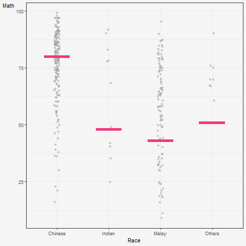
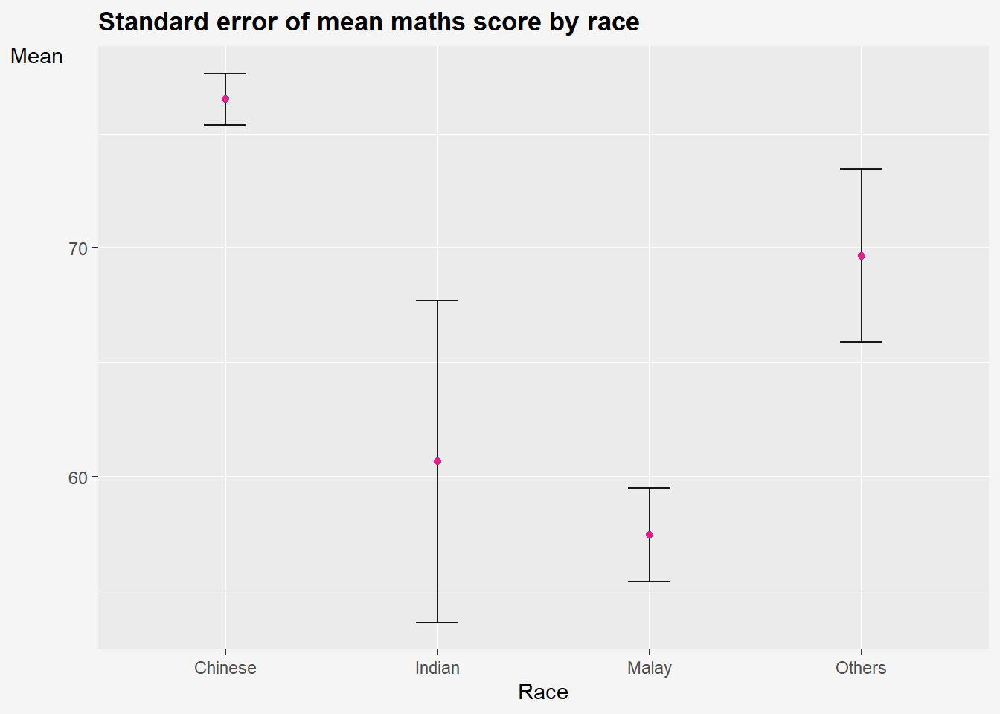
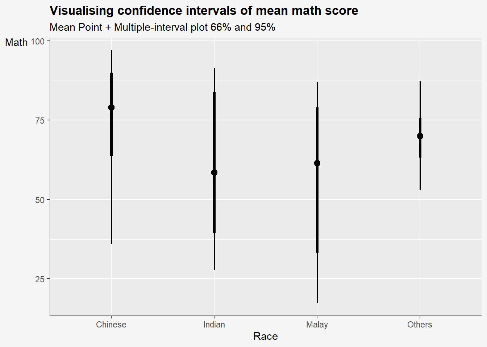
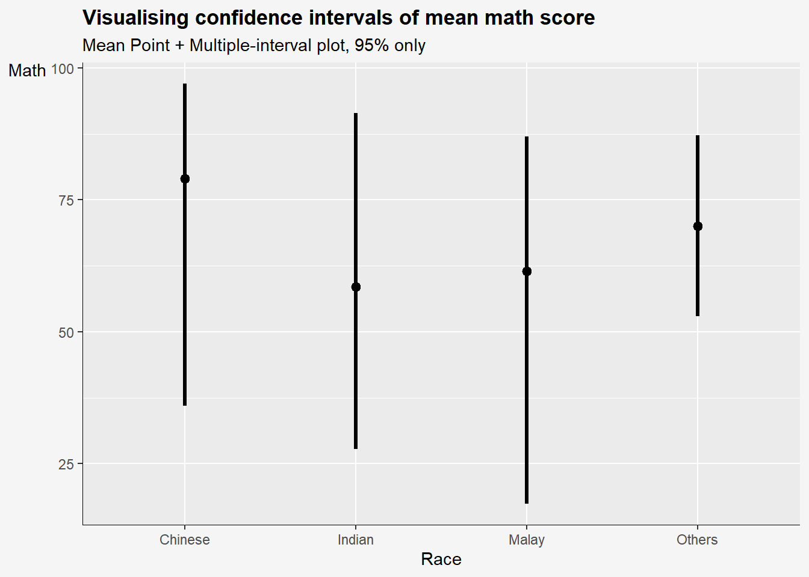
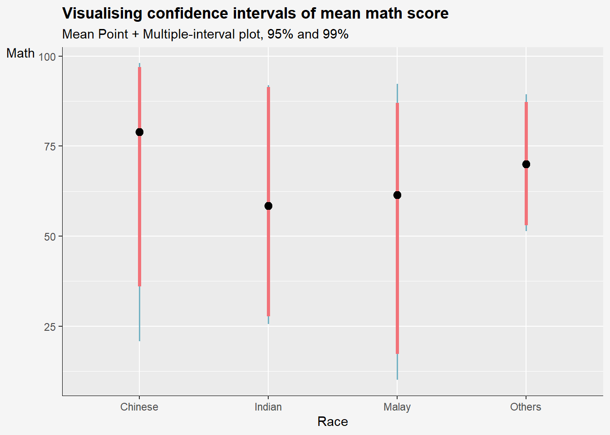
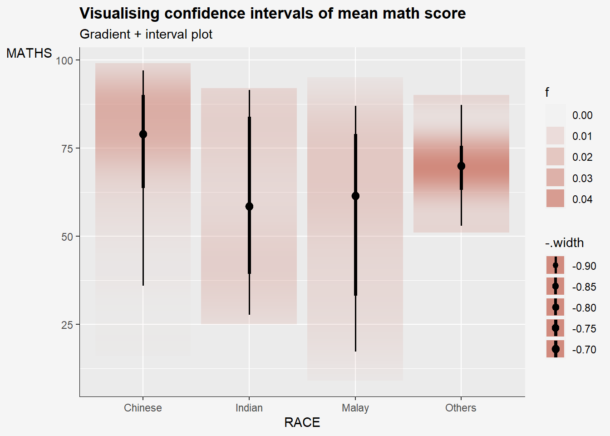
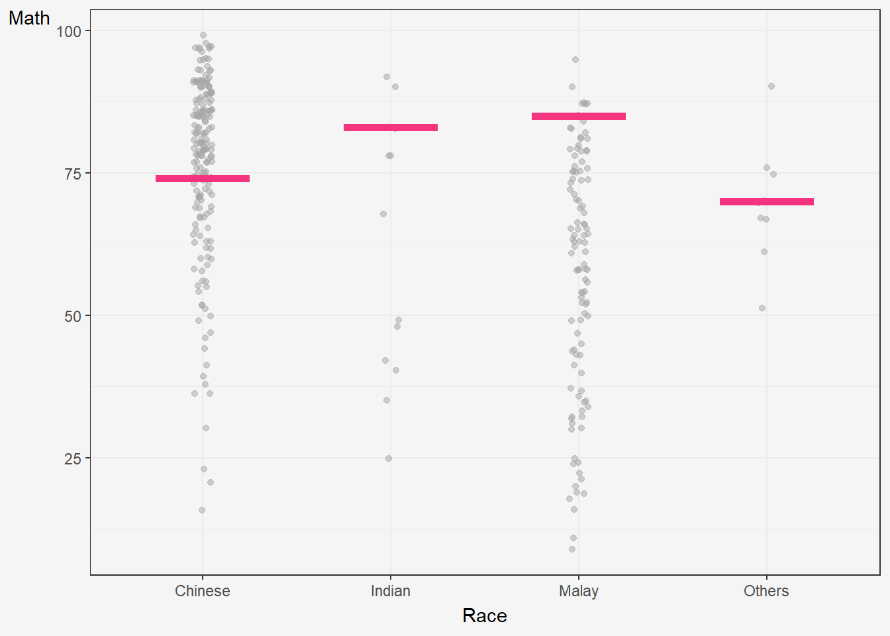

devtools::install_github("wilkelab/ungeviz")Hands-on Exercise 4c: Visualising Uncertainty

1 Learning Outcome
Visualising uncertainty poses a significant challenge in data visualisation. When we observe a data point placed at a particular location, we often perceive it as an exact reflection of the true data value. It’s hard to grasp that the data point might actually exist within a range beyond where it’s plotted. This situation is common in data visualisation, as nearly every dataset contains some degree of uncertainty. The decisions we make about whether and how to depict this uncertainty can greatly impact how accurately our audience understands the data’s significance.
In this chapter, we will gain hands-on experience on creating statistical graphics for visualising uncertainty, including
plotting statistics error bars by using ggplot2,
plotting interactive error bars by combining ggplot2, plotly and DT,
creating advanced by using ggdist, and
creating hypothetical outcome plots (HOPs) by using ungeviz package.
2 Getting Started
For the purpose of this exercise, the following R packages will be used, they are:
- tidyverse, a family of R packages for data science process,
- plotly for creating interactive plot,
- gganimate for creating animation plot,
- DT for displaying interactive html table,
- crosstalk for for implementing cross-widget interactions (currently, linked brushing and filtering), and
- ggdist for visualising distribution and uncertainty.
pacman::p_load(ungeviz, plotly, crosstalk,
DT, ggdist, ggridges,
colorspace, gganimate, tidyverse,
ggiraph)Lets load the student exam data.csv for our exercise today.
exam <- read_csv('data/Exam_data.csv')3 Visualizing the uncertainty of point estimates (manual method, without ggdist package)
A point estimate is a single number, such as a mean. Uncertainty is expressed as standard error, confidence interval, or credible interval
Don’t confuse the uncertainty of a point estimate (mean, median..) with the variation in the sample (standard deviation sigma, and variation sigma square etc).
The standard deviation measures the variation of the values from the mean of ONE sample.
The standard error is the standard deviation of both sides of the ‘mother of all means’ of all the sample means. <- Refer lecture 4 slide 23
3.1 ggplot2 methods
In this section, we learn how to plot error bars of maths scores by race by using data provided in exam tibble data frame.
The code chunk below performs the following:
group_by()of dplyr package groups the observation by RACE,summarise()computes the count of observations, mean, standard deviation and standard error of Maths by RACE,mutate()is used to derive standard error of Maths by RACE, andsave the output as a tibble data table called
my_sum.
my_sum <- exam %>%
group_by(RACE) %>%
summarise(n=n(),
mean=mean(MATHS),
sd = sd(MATHS)) %>%
mutate(se=sd/sqrt(n-1)) #<<< standard error formulaNext, the code chunk below will be used to display my_sum tibble data frame in an html table format.
knitr::kable(head(my_sum), format = 'html')| RACE | n | mean | sd | se |
|---|---|---|---|---|
| Chinese | 193 | 76.50777 | 15.69040 | 1.132357 |
| Indian | 12 | 60.66667 | 23.35237 | 7.041005 |
| Malay | 108 | 57.44444 | 21.13478 | 2.043177 |
| Others | 9 | 69.66667 | 10.72381 | 3.791438 |
3.1.1 Plotting standard error bars of point estimates
The code chunk below is used to reveal the standard error of mean maths score by race. It shows one standard deviation away from the ‘mother of all means’ for all the means from all the samples.
Impt: Standard error is a measure of the variation of the mean of all the means from all samples of an underlying distribution.
Show the code
ggplot(my_sum) +
geom_errorbar(aes(x=RACE,
ymin=mean-se,
ymax=mean+se),
width = 0.2,
colour = 'black',
alpha = 0.9,
linewidth=0.5) +
geom_point(aes(x=RACE,
y=mean),
stat = 'identity', #<<< actual points refer to mean
color='#e0218a',
size = 1.5,
alpha = 1) +
labs(title="Standard error of mean maths score by race",
x= "Race",
y= "Mean") +
theme(
legend.position = "none",
#panel.grid.major = element_blank(),
axis.title.y = element_text(hjust=1, angle=0),
axis.text.y = element_text(),
plot.title = element_text(hjust=0, face="bold"),
plot.background = element_rect(fill="#f5f5f5",colour="#f5f5f5") ,
) 
In the code above:
stat = 'identity'means that theyvalues in thegeom_pointlayer correspond to the actual values in the data frame, rather than a summary statistic like mean or median.The error bars are computed by using the formula mean+/-se.
3.1.2 Plotting confidence interval of point estimates
Instead of plotting the standard error bar of point estimates, we can also plot the confidence intervals of mean maths score by race.
Lets plot a 95% confidence interval of mean maths score by race. The error bars should be sorted by the average maths scores. (Refer to take-home ex 1 on sorting by mean)
Show the code
ggplot(my_sum) +
geom_errorbar(
aes(x=reorder(RACE,-mean), # reorder(x,y) means to reorder x based on increasing or decreasing values of y. To sort by descending values of Y, use -Y.
ymin=mean-1.96*se, #<<<< formula to calc 95% CI
ymax=mean+ 1.96*se), #<<<<
width = 0.2,
colour = 'black',
alpha = 0.9,
size=0.5) +
geom_point(aes(x=RACE,
y=mean),
stat = 'identity', #<<< actual points refer to mean
color='red',
size = 1.5,
alpha = 1) +
labs(x = "Maths score",
title = "95% confidence interval of mean maths score by race")
In the code above:
The confidence intervals are computed by using the formula mean+/-1.96*se.
The error bars is sorted by using the average maths scores.
What is the difference between standard error plot above and this 95% confidence interval plot?
Earlier , we plot error bars of 1 standard deviation away from the mother of all means. Here, we are plotting 1.96 * standard deviation away from the mother of all means. The higher the % CI, the greater the margin or error.
3.1.3 Visualizing the uncertainty of point estimates with interactive error bars
We can also plot interactive error bars for the 99% confidence interval of mean maths score by race as shown in the figure below.
Crosstalk’s main R API is a SharedData R6 class. You use this class to wrap your data frame, and pass it to a Crosstalk-compatible widget where a data frame would normally be expected.
Show the code
shared_df = SharedData$new(my_sum)
bscols(widths = c(4,8),
ggplotly((ggplot(shared_df) +
geom_errorbar(aes(
x=reorder(RACE, -mean),
ymin=mean-2.58*se,
ymax=mean+2.58*se),
width=0.2,
colour="black",
alpha=0.9,
size=0.5) +
geom_point(aes(
x=RACE,
y=mean,
text = paste("Race:", `RACE`,
"<br>N:", `n`,
"<br>Avg. Scores:", round(mean, digits = 2),
"<br>95% CI:[",
round((mean-2.58*se), digits = 2), ",",
round((mean+2.58*se), digits = 2),"]")),
stat="identity",
color="red",
size = 1.5,
alpha=1) +
xlab("Race") +
ylab("Average Scores") +
theme_minimal() +
theme(axis.text.x = element_text(
angle = 45, vjust = 0.5, hjust=1)) +
ggtitle("99% Confidence interval of average /<br>maths scores by race")),
tooltip = "text"),
DT::datatable(shared_df,
rownames = FALSE,
class="compact",
width="100%",
options = list(pageLength = 8,
scrollX=T),
colnames = c("No. of pupils",
"Avg Scores",
"Std Dev",
"Std Error")) %>%
formatRound(columns=c('mean', 'sd', 'se'),
digits=2))Step 1: Create interactive error bar for 99% CI
Show the code
# create a new column tooltip to contain the tooltip text.
my_sum$tooltip <- c(paste0("RACE: ",
my_sum$RACE,
"\n N= ",
my_sum$n,
"\n Avg Score: ",
round(my_sum$mean, digits=2)
))
p <- ggplot(my_sum) +
geom_errorbar_interactive(aes(x=reorder(RACE,-mean),
ymin=mean-2.58*se, #<<<< formula to calc 95% CI
ymax=mean+ 2.58*se,
tooltip=tooltip),
width = 0.2,
colour = 'black',
alpha = 0.9,
size=0.5) +
geom_point(aes(x=RACE,
y=mean),
stat = 'identity', #<<< actual points refer to mean
color='red',
size = 1.5,
alpha = 1) +
labs(title="99% confidence interval of maths score by race",
x= "Race",
y= "Mean") +
theme(
axis.title.y = element_text(hjust=1, angle=0),
axis.text.y = element_text(),
axis.text.x = element_text(angle = 0, hjust = 0.5),
axis.title = element_text(face = "bold"),
axis.line = element_line(linewidth = 0.2),
plot.title = element_text(hjust=0, face="bold"),
plot.background = element_rect(fill="#f5f5f5",colour="#f5f5f5") ,
)
girafe(ggobj = p,
width_svg = 8,
height_svg = 8*0.618)Step 2: Create an interactive data table with DT
%>%operator pipes the data frame into themutate_if()function, where we specify the conditionis.numericto select only the numeric columns. We use the tilde~symbol to specify the rounding function, and pass thedigitsargument to round to two decimal places. The resulting data framedfwill have all numerical columns rounded to two decimal places.
Show the code
# Round all numerical columns to two decimal places
my_sum <- my_sum %>%
mutate_if(is.numeric, ~ round(., digits = 2))
DT::datatable(my_sum, class='compact')Step 3: Combining both
Next, combine graph and interactive table using Crosstalk, which is an add-on to the htmlwidgets package. It extends htmlwidgets with a set of classes, functions, and conventions for implementing cross-widget interactions (currently, linked brushing and filtering).
The datatable is linked to the visualisation. Click on multiple rows to filter according.
Show the code
# Use highlight_key() to add a unique key to the data frame my_sum3 so that it can be linked to interactive plots later
d <- highlight_key(my_sum)
p <- ggplot(d) +
geom_errorbar(aes(x=reorder(RACE,-mean),
ymin=mean-2.58*se, #<<<< formula to calc 95% CI
ymax=mean+ 2.58*se),
width = 0.2,
colour = 'black',
alpha = 0.9,
size=0.5) +
geom_point(aes(x=RACE,
y=mean),
stat = 'identity', #<<< actual points refer to mean
color='red',
size = 1.5,
alpha = 1) +
labs(title="99% confidence interval of maths score by race",
x= "Race",
y= "Mean") +
theme(
axis.title.y = element_text(hjust=1, angle=0),
axis.text.y = element_text(),
axis.text.x = element_text(angle = 0, hjust = 0.5),
axis.title = element_text(face = "bold"),
axis.line = element_line(linewidth = 0.2),
plot.title = element_text(hjust=0, face="bold"),
plot.background = element_rect(fill="#f5f5f5",colour="#f5f5f5") ,
)
# Convert ggplot to an interactive plotly plot using the ggplotly(), "plotly click" specifies that highlight should be based on click
gg <- highlight(ggplotly(p),
"plotly_selected")
crosstalk::bscols(list(width = 7,gg),
list(width=5,DT::datatable(d)))
7
5
4 Visualising Uncertainty: ggdist package
ggdist is an R package that provides a flexible set of ggplot2 geoms and stats designed especially for visualising distributions and uncertainty.
It is designed for both frequentist and Bayesian uncertainty visualization, taking the view that uncertainty visualization can be unified through the perspective of distribution visualization:
for frequentist models, one visualises confidence distributions or bootstrap distributions (see vignette(“freq-uncertainty-vis”));
for Bayesian models, one visualises probability distributions (see the tidybayes package, which builds on top of ggdist).
4.1 Visualizing the uncertainty of point estimates
In the code chunk below, stat_pointinterval() of ggdist is used to build a visual for displaying distribution of maths scores by race.
stat_pointinterval means points and multiple intervals. The default confidence interval us 95%. To change the level to 99%, add conf.level = 0.99 to stat_pointinterval function.
Take note that the default .width values are set to c(0.66, 0.95) confidence intervals.
Show the code
exam %>%
ggplot(aes(x=RACE, #<< plot the base layer
y=MATHS)) +
stat_pointinterval() + #<< .width=c(0.66,0.95)
labs(
title='Visualising confidence intervals of mean math score',
subtitle = "Mean Point + Multiple-interval plot 66% and 95%",
x= "Race",
y= "Math") +
theme(
axis.title.y = element_text(hjust=1, angle=0),
axis.text.y = element_text(),
axis.text.x = element_text(angle = 0, hjust = 0.5),
axis.title = element_text(),
axis.line = element_line(linewidth = 0.2),
plot.title = element_text(hjust=0, face="bold"),
plot.background = element_rect(fill="#f5f5f5",colour="#f5f5f5") ,
)
Some of the arguments:
.width: For intervals, the interval width as a numeric value in[0, 1]. For slabs, the width of the smallest interval containing that value of the slab.point_interval: This function determines the point summary (typically mean, median, or mode) and interval type (quantile interval,qi; highest-density interval,hdi; or highest-density continuous interval,hdci)
Show the code
exam %>%
ggplot(aes(x = RACE, y = MATHS)) +
stat_pointinterval(
.width = 0.95, #<<
.point = median, #<<
.interval = qi) + #<<
labs(
title='Visualising confidence intervals of mean math score',
subtitle = "Mean Point + Multiple-interval plot, 95% only",
x= "Race",
y= "Math") +
theme(
axis.title.y = element_text(hjust=1, angle=0),
axis.text.y = element_text(),
axis.text.x = element_text(angle = 0, hjust = 0.5),
axis.title = element_text(),
axis.line = element_line(linewidth = 0.2),
plot.title = element_text(hjust=0, face="bold"),
plot.background = element_rect(fill="#f5f5f5",colour="#f5f5f5") ,
)
Show the code
exam %>%
ggplot(aes(x = RACE, y = MATHS)) +
#Using stat_pointinterval to plot the points and intervals
stat_pointinterval(
.width = c(0.95,0.99), #<<
.point = median,
.interval = qi,
aes(interval_color=stat(level)),
show.legend = FALSE) +
#Defining the color of the intervals
scale_color_manual(
values = c("#73b2c4", "#f27279"),
aesthetics = "interval_color") +
#Title, subtitle, and caption
labs(
title='Visualising confidence intervals of mean math score',
subtitle = "Mean Point + Multiple-interval plot, 95% and 99%",
x= "Race",
y= "Math") +
theme(
axis.title.y = element_text(hjust=1, angle=0),
axis.text.y = element_text(),
axis.text.x = element_text(angle = 0, hjust = 0.5),
axis.title = element_text(),
axis.line = element_line(linewidth = 0.2),
plot.title = element_text(hjust=0, face="bold"),
plot.background = element_rect(fill="#f5f5f5",colour="#f5f5f5") ,
) 
stat(level)calculates the confidence interval limits based on the specifiedconf.levelargumentinterval_colormaps the calculated interval color to theinterval_colorargument.
4.2 Using stat_gradientinterval()
In the code chunk below, stat_gradientinterval() of ggdist is used to build a visual for displaying distribution of maths scores by race.
Show the code
exam %>%
ggplot(aes(x = RACE,
y = MATHS)) +
stat_gradientinterval(
fill = "#d18a7d",
show.legend = TRUE
) +
labs(
title = "Visualising confidence intervals of mean math score",
subtitle = "Gradient + interval plot")+
theme(
axis.title.y = element_text(hjust=1, angle=0),
axis.text.y = element_text(),
axis.text.x = element_text(angle = 0, hjust = 0.5),
axis.title = element_text(),
axis.line = element_line(linewidth = 0.2),
plot.title = element_text(hjust=0, face="bold"),
legend.background = element_rect(colour = "#f5f5f5", fill = "#f5f5f5"),
plot.background = element_rect(fill="#f5f5f5",colour="#f5f5f5") ,
) 
5 Visualising Uncertainty with Hypothetical Outcome Plots (HOPs)
What are HOPs?
Rather than showing a continuous probability distribution, Hypothetical Outcome Plots (or HOPs) visualize a set of draws from a distribution, where each draw is shown as a new plot in either a small multiples or animated form.
Explanation of the code below:
The code creates a ggplot object to visualize the distribution of MATHS scores for different races in the exam dataset using the geom_point() and geom_hpline() functions from ggplot2.
Specifically, it is creating a scatterplot (geom_point()) of MATHS scores against RACE with some jitter (position_jitter()) added to the points to avoid overplotting. The factor() function is used to convert the RACE variable to a categorical variable.
Additionally, a horizontal line (geom_hpline()) is added to the plot to represent the median MATHS score for each race, calculated using sampler() function with 25 samples drawn from the original dataset for each race. The line is colored in #D55E00.
The transition_states() function is used to create an animation by specifying the .draw column as the states for the animation. The animation has 3 states (1, 2, 3) and will animate the plot with a transition between each state.
Finally, the theme_bw() function is used to set the theme of the plot to a black and white color scheme.
Show the code
hop <-
ggplot(data = exam,
(aes(x = factor(RACE),
y = MATHS))) +
geom_point(position = position_jitter(
height = 0.3,
width = 0.05),
linewidth = 0.4,
color = "#a6a6a6",
alpha = 1/2) +
geom_hpline(data = sampler(25,
group = RACE),
height = 0.6,
color = "#f5347f") +
theme_bw() +
labs(
y = "Math",
x = "Race")+
theme(
panel.background = element_rect(fill="#f5f5f5", color="#f5f5f5"),
axis.title.y = element_text(hjust=1, angle=0),
axis.text.x = element_text(angle = 0, hjust = 0.5),
plot.title = element_text(hjust=0, face="bold"),
plot.background = element_rect(fill="#f5f5f5",colour="#f5f5f5") ,
) +
# `.draw` is a generated column indicating the sample draw
transition_states(.draw, 1, 3)
hop